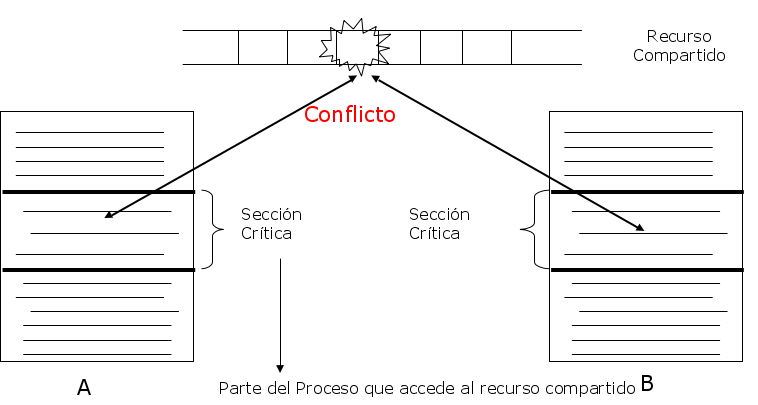

Universidad Nacional Experimental Del Táchira
Decanato De Docencia
Dpto. Ingeniería en Informática
Sincronización de Procesos
Código 0435607T
Contenido
- Introducción
- Conceptos fundamentales
- Condiciones de competencia
-
Exclusión mutua:
- Con Espera ocupada.
- Sin Espera ocupada.
- Problemas de clásicos de sincronización
Introducción
- Los procesos en muchas ocasiones requieren comunicación con otros procesos.
- Los procesos pueden compartir directamente un espacio de direcciones lógico o pueden comunicarse a través de archivos o mensajes mensajes. Procesos cooperativos.
- El acceso concurrente y desordenado a los datos compartidos puede dar lugar a incoherencia de los datos.
Introducción
Surgen entonces tres preguntas:
- ¿Cómo un proceso puede comunicarse con otro?
- ¿Cómo hacer que dos o mas procesos no interfieran entre si?
- ¿Cómo se puede obtener la secuencia de ejecución apropiada cuando hay dependencias?
Condiciones de competencia
Fenómeno producido cuando varios procesos compiten por el acceso a uno o varios recursos produciendo el bloqueo en la ejecución. Ocasiona el cuelge del S.O. Para evitarlo se debe garantizar el acceso seguro a recursos compartidos,coordinando y sincronizando los procesos.
Sección Crítica
Segmento del código del programa donde se accede a un recurso <<<<<<< HEAD compartido (como una estructura en memoria o un dispositivo de E/S) que no debe ser accedido por otro hilo de ejecución para evitar conflictos o alteración del resultado esperado.
 ======= compartido (estructura en memoria o un dispositivo de E/S) que no debe ser accedido por otro hilo de ejecución para evitar conflictos o alteración del resultado esperado.
{kind=link}
Condiciones para evitar la competencia
- Dos o más procesos no pueden estar dentro de sus secciones críticas al mismo tiempo.
- Nunca se debe suponerse sobre la velocidad u orden de ejecución de los procesos.
- Ningún proceso ejecutandose fuera de su sección crítica puede bloquear otro procesos.
- Ningún proceso deberá tener que esperar indefinidamente para entrar a su región crítica.
Exclusión Mutua
Es el método mas común para evitar el uso simultáneo de los recursos del sistema como variables globales y dispositivos de E/S, por dos (2) o mas procesos del sistema.
Exclusión Mutua
Con espera ocupada
- Desactivación de interrupciones (hardware).
- Variables de Cerradura
- Alternancia estricta
- Solución de Peterson
- La instrucción TSL
Exclusión Mutua
con espera ocupada
Desactivación de Interrupciones (hardware)
Es el método mas simple, consiste en desactivar todas las interrupciones de hardware antes de entrar a la sección crítica. Sin embargo, en la práctica no es recomendable porque si el proceso falla en su sector crítico, el sistema operativo no puede recuperarse y se cuelga el sistema.
Exclusión Mutua
con espera ocupada
Desactivación de Interrupciones (hardware)
- No es correcto que procesos del usuario desactiven interrupciones.
- No funciona en sistemas de multiprocesamiento, ni distribuidos.
- Pueden ocurrir errores catastróficos.
Exclusión Mutua con Espera ocupada
Variables de Cerradura
En éste caso se utiliza una variable binaria, donde 0 representa cuando no hay ningún proceso en su sección crítica y 1 cuando está ocupada. Entonces cada proceso antes de ingresar a la sección crítica verifica el estado de la variable de cerradura y en caso de tener 0 como valor, cambia el valor a 1 e ingresa a la misma, en caso de que la misma sea 1 el proceso se queda en espera verificando hasta que el estado cambie a 0.
Exclusión Mutua con Espera ocupada
Variables de Cerradura
En sistemas con múltiples procesadores o distribuidos, se presente un problema: si dos procesos verifican al mismo tiempo el valor de la cerradura y está en 0, ambos ingresan a la región crítica.
Exclusión Mutua con Espera ocupada
Variables de Cerradura
Ejemplo
do {
if(!cerrojo) {
cerrojo = 1;
ejecutar_seccion_critica();
cerrojo = 0;
}
//Sigue con el resto del codigo
} while (TRUE);
Exclusión Mutua con Espera ocupada
Alternancia estricta
Conocido también como la primera versión del algoritmo de Dekker, obliga a cada proceso tener un turno y existe un cambio de turno cada vez que un proceso sale de la sección critica.
- Bloquea el acceso al otro proceso cuando se está en una sección crítica.
- Si un proceso es mas lento que el otro, bloquea al otro por mucho tiempo. Viola la regla 3: ningún proceso debe bloquear a otro fuera de su sección crítica.
- Si uno de ellos se bloquea dentro o fuera de la sección crítica, puede bloquear al resto.
Exclusión Mutua con Espera ocupada
Alternancia estricta
Proceso A
while (1) {
while (turno != 0); //espera
ejecutar_seccion_critica();
turno = 1;
seccion_no_critica();
}
Proceso B
while (1) {
while (turno != 1); //espera
ejecutar_seccion_critica();
turno = 0;
seccion_no_critica();
}
Exclusión Mutua con Espera ocupada
Solución de Peterson
- Es un algoritmo realizado por Peterson en 1981, para compartir recursos sin complicaciones a través del uso de memoria compartida para la sincronización.
- Antes de leer la variable compartida, cada proceso llama a una función para entrar a su sección crítica pasando su respectivo número como parámetro.
- Luego se provoca una espera (en caso necesario) hasta que el proceso pueda entrar. Al finalizar, se llama a otra función para liberar su sección crítica e indicar que ha finalizado para permitir la entrada a otros procesos.
Exclusión Mutua con Espera ocupada
Solución de Peterson
(para 2 procesos)
#define N 2
int turno, interesado[N];
void entrarSC(int proceso) {
int otro = 1 - proceso;
interesado[proceso] = 1; //El proceso actual esta interesado
turno = proceso;
while (turno == proceso && interesado[otro] == 1);
}
void salirSC(int proceso) {
interesado[proceso] = 0; //Ya no esta interesado
}
Exclusión Mutua con Espera ocupada
Instrucción TSL (Test-and-set lock)
- Depende del hardware para utilizarse, las computadoras con más de un procesador suelen tener una instrucción llamada TSL.
- Esta instrucción lee el valor de un registro en memoria y guarda un valor (distinto a 0). Al ser una instrucción por hardware, el procesador garantiza que la instrucción TSL se realiza sin interrupciones de otros proceso.
{kind=link}
Exclusión Mutua con Espera ocupada
Instrucción TSL (Test-and-set lock)
Además, en un sistema multiprocesador, ninguno de los otros procesadores puede acceder a la variable antes de terminar de ejecutarse la instrucción. (al ejecutarse se cierra el bus de la memoria)
Exclusión Mutua
sin Espera ocupada
Dormir y despertar
- Ahora se presentan soluciones donde no se desperdicia el tiempo del CPU.
- sleep: es una llamada al sistema que provoca a quien lo llamó se bloquee hasta que otro proceso lo despierte.
- wakeup: es una llamada al sistema para despertar un proceso bloqueado.
Problema del Productor - Consumidor
- Es un problema donde se puede aplicar este algoritmo.
- Dos procesos comparter un buffer de tamaño fijo.
- Un proceso es el productor y añade información al buffer.
- Otro es el consumidor y lee (o modifica) la información del buffer.
El problema del
Productor - Consumidor
- El problema del productor es cuando vaya a poner un elemento en el buffer y este esté lleno. (Se va a dormir y se despierta cuando se consuma algún elemento)
- El problema del consumidor es cuando va consumir un elemento del buffer pero está vacío. (Se va a dormir y despierta cuando exista un elemento)
- Cada proceso debe chequear al otro para despertarlo antes de irse a dormir.
El problema del
Productor - Consumidor

El problema del Productor - Consumidor
Productor
void productor() {
int item;
while (1) {
producir_item( &item);
if (contador == N) sleep();
insertar(item);
contador++;
if (contador == 1)
wakeup(consumidor);
}
}
Proceso B
void consumidor() {
int item;
while (1) {
if (contador == 0)
sleep();
contador--
if (contador == N-1)
wakeup(productor);
consumir_item(item);
}
}
Exclusión Mutua sin Espera ocupada
Semáforos
- Propuesto por Dijkstra en 1965.
- Es una varible entera denominada S donde (exceptuando su inicialización) se acceden mediante llamadas wait() y signal().
- Simboliza el numero de wakeups pendientes, 0 indica que no hay alguno por despertar.
- wait() - DOWN verifica si el valor del semaforo es mayor a cero. Si es así, lo decrementa y continúa sus operaciones; en caso contrario se va a dormir y espera para continuar.
Exclusión Mutua sin Espera ocupada
Semáforos
- signal() - UP incrementa el valor del semáforo. Si existe uno o mas procesos dormidos y no pueden completar una operación wait(), el semáforo elige uno al azar y le permite completar wait().
- Se debe garantizar que dos procesos no ejecuten wait() y signal() sobre el mismo semáforo al mismo tiempo.
- Las aplicaciones pueden pasar mucho tiempo en secciones críticas y por tanto, no es una buena solución (Se desaprovecha la CPU)
Productor - Consumidor
con Semaforos
- FULL (LLeno):cuenta las ranuras ocupadas.
- EMPTY (Vacío):cuenta las ranuras libres.
- MUTEX:Controla que tanto el consumidor, como productor entre al mismo tiempo al buffer.
Productor - Consumidor
con Semaforos
#define N 100
typedef int semaforo;
semaforo mutex = 1, empty = N, full = 0;
void productor() {
int item;
while (1) {
prod_item( &item);
down(empty);
down(mutex);
seccion_critica(item);
up(mutex);
up(full);
}
}
void consumidor() {
int item;
while (1) {
down(full);
down(mutex);
remover( &item);
up(mutex);
up(empty);
consumer(item);
}
}
Monitores
- Es una herramienta básica (brindada por el compilador) utilizada para lograr la exclusión mutua: sólo un proceso puede estar activo en un monitor en un momento dado.
- Se encuentra en un nivel superior de los semáforos, ya que al usar estos últimos, si no estan programados correctamente pueden provocar bloqueos mutuos.
Bloqueos mutuos (deadlocks)

Bloqueos mutuos (deadlocks)
Imaginemos 2 semáforos con un valor inicial de 1: S y Q.
wait(S);
wait(Q);
seccion_critica();
signal(S);
signal(Q);
wait(Q);
wait(S);
seccion_critica();
signal(Q);
signal(S);
Bloqueos mutuos (deadlocks)
- En el primer wait() el valor de los semáforos disminuye a 0.
- Ambos procesos se quedan dormidos al mismo tiempo.
- Ambos quedan esperando a que el otro despierte, modifique el semáforo para continuar.
Inanición (Bloqueo indefinido)
Un proceso siempre queda en espera y ocurren eventos que le impiden salir de la cola de espera de un semáforo.
Contadores de eventos
Simplemente es una variable entera que lleva el conteo de los eventos sucedidos, se utiliza para evitar la exclusión mutua.
Operaciones
- Read(contador)
- Advance(contador)
- Wait(contador, valor) - Espera a que el contador llegue al valor deseado
Productor - Consumidor con contadores
En este caso se utilizan 2 contadores: IN para los items producidos y OUT para los items consumidos.
#define N 100
int IN, OUT;
productor() {
int item, secuencia = 0;
while (1) {
producir_item( &item);
secuencia++;
await(OUT, secuencia-N);
enter_item(item);
advance(IN);
}
}
consumidor() {
int item, secuencia = 0;
while (1) {
secuencia++;
await(IN, secuencia);
remove_item( &item);
advance(OUT);
consumir_item(item);
}
}
Transferencia de mensajes
Utiliza las primitivas Send y Receive , las cuales son llamadas al sistema. La primera llamada envía un mensaje a un destino dado y la segunda recibe el mensaje del destino especificado.
Problemas
- Son mas complejos de implementar.
- Todos los mensajes son del mismo tamaño.
- Para evitar la pérdida de mensajes se deben implementar acuses de recibos, pero incrementan la complejidad.
- Se debe verificar la autenticidad del emisor, de lo contrario se crean agujeros de seguridad.
Problemas de clásicos de sincronización
- Una base de datos compartida con una serie de procesos, algunos desean leerla (lectores) y otros tanto leer como escribir (escritores).
- Si 2 procesos desean leer al mismo tiempo no hay problema, pero, si un escritor y otro proceso (lector o escritor) usa la BD al mismo tiempo ocurrirá un caos.
Lectores - escritores
======= >>>>>>> 3bae6968bbf93643339c4739ba8de516fa4824d5Lectores - escritores
Problemas de clásicos de sincronización
Lectores - escritores
La solución al problema utiliza:
- Semáforo mutex inicializado a 1.
- Semáforo writer inicializado a 1.
- Entero readcount inicializado a 0.
Lectores - Escritores
Escritor
while (true) {
wait(writer);
realizar_escritura(data);
signal(writer);
}
Lector
while (true) {
wait(mutex);
readcount++;
if (readcount == 1) wait(writer);
signal(mutex);
realizar_lectura();
wait(mutex);
readcount--;
if (readcount == 0) signal(writer);
signal(mutex);
}
Problemas de clásicos de sincronización
Problema de los Filósofos
- 5 filósofos sentados alrededor de una mesa. Pasan su vida cenando y pensando. C/U tiene un plato de fideos y un tenedor a la izquierda de su plato.
- Para comer, necesita 2 tenedores y sólo puede tomar los de sus lados.
- Si alguno coge un tenedor y el otro está ocupado, espera con el tenedor en la mano, hasta agarrar el otro, para luego comer.
Problemas de clásicos de sincronización
Problema de los Filósofos
Permitir máximo 4 filósofos en la mesa.
#define N 4
while (true) {
wait(chopstick[i]);
wait(chopstick[(i + 1) % (N - 1))]);
comer();
signal(chopstick[i]);
signal(chopstick[(i + 1) % (N - 1)]);
pensar();
}
Anexos
Exclusión mutua

Fuente: Julia Evans